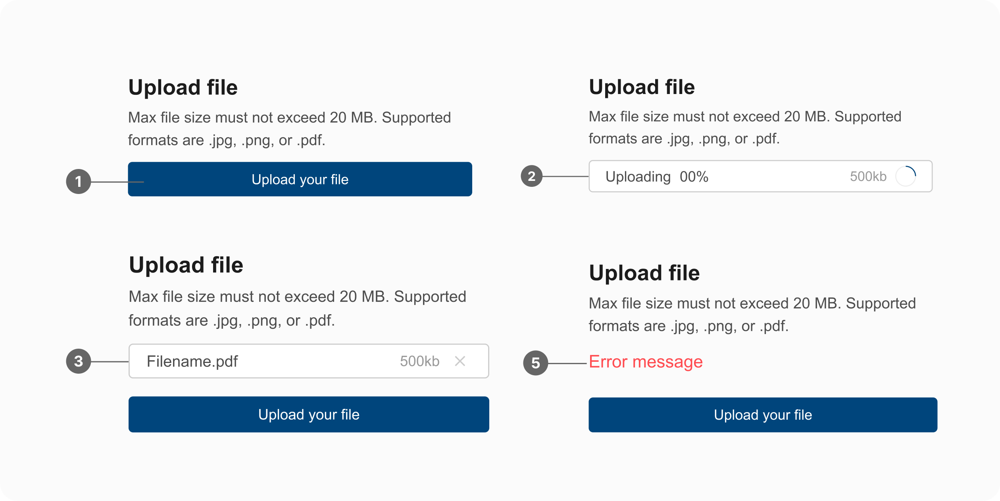
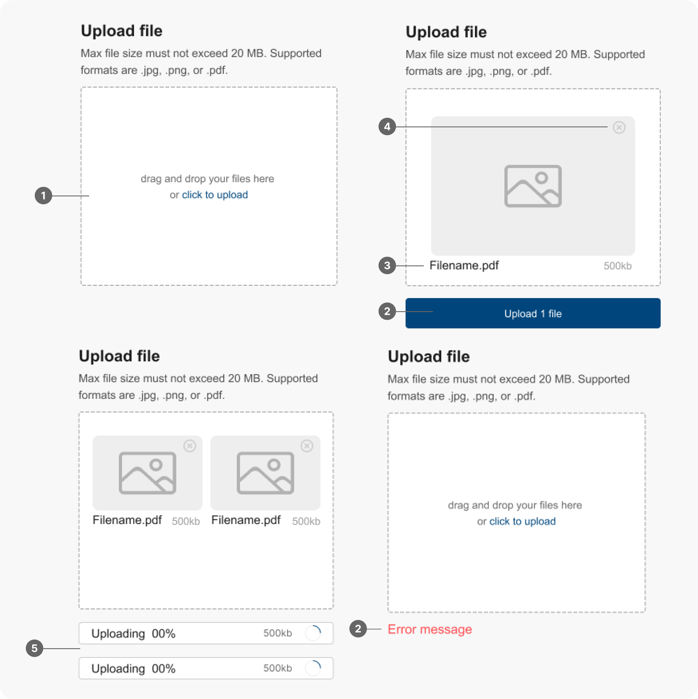

File Uploader 檔案上傳器
概述
檔案上傳器是一種允許使用者將檔案從本地設備上傳到伺服器的元件。它在各種應用程式中被廣泛使用，例如雲端儲存服務、內容管理系統等。
使用時機
檔案上傳器常用於以下情境：
- 檔案分享：在應用程式中分享檔案。
- 雲端儲存：將檔案上傳到雲端儲存服務，以便隨時隨地存取。
- 內容管理：在內容管理系統中上傳圖片、文件或其他媒體檔案。
- 資料收集：收集使用者提交的檔案。
使用規範
當您取用檔案上傳器進行設計時，應考慮以下原則：
- 清晰的指示：提供明確的指示，告訴使用者如何選擇和上傳檔案。
- 檔案類型限制：根據應用程式的需求，限制可上傳的檔案類型。
- 檔案大小限制：設定檔案大小限制，避免過大的檔案影響上傳速度和伺服器資源。
- 即時預覽：在上傳之前顯示所選檔案的預覽資訊，讓使用者確認檔案是否正確。
- 上傳進度：顯示檔案上傳的進度，讓使用者了解上傳狀態。
- 錯誤處理：當上傳失敗時，提供明確的錯誤訊息，並引導使用者解決問題。
設計範例
基本檔案上傳器 (Basic File Uploader)
允許使用者選擇一個或多個檔案並上傳。

- 按鈕 (Button)：觸發檔案選擇對話框的按鈕，通常顯示為「選擇檔案」或「上傳檔案」。
- 檔案列表區 (File
List)：顯示所選檔案的列表，每個檔案包含預覽資訊，如檔案名稱、檔案大小、檔案類型和檔案縮圖（檔案縮圖可依照規格需求而定）。
- 刪除按鈕 (Delete Button)：允許使用者移除已選擇的檔案。
- 上傳進度提示
- 訊息提示 (上傳成功/失敗)
拖放上傳器 (Drag-and-Drop Uploader)
允許使用者將檔案拖放到指定區域進行上傳。

- 拖放區域 (Drop Area)：允許使用者將檔案拖放到此區域進行上傳。
- 按鈕 (Button)：觸發檔案選擇對話框的按鈕，通常顯示為「選擇檔案」或「上傳檔案」。
- 檔案列表/預覽區 (File List/Preview
Area)：顯示所選檔案的列表，每個檔案包含預覽資訊，如檔案名稱、檔案大小、檔案類型和檔案縮圖（檔案縮圖可依照規格需求而定）。
- 刪除按鈕 (Delete Button)：允許使用者移除已選擇的檔案。
- 上傳進度提示
- 訊息提示 (上傳成功/失敗)
檔案上傳分解步驟
- 預設 (Default)：按鈕可用，顯示提示文字或圖標，例如「選擇檔案」。檔案預覽區為空，進度條不顯示。
- 滑鼠懸停 (Hover)：滑鼠懸停在按鈕或拖放區域上時。
- 拖放檔案 (Drag and Drop)：拖放區域允許使用者將檔案從其他地方拖曳至該區域，自動觸發檔案上傳。
- 檔案選擇 (File
Selected)：使用者已選擇要上傳的檔案。檔案預覽區顯示所選檔案的預覽資訊（名稱、大小、類型、縮圖等）。刪除按鈕出現，允許使用者移除已選擇的檔案。上傳按鈕可能出現或啟用。
- 上傳中
(Uploading)：檔案正在上傳。進度條顯示上傳進度。取消按鈕出現或啟用，允許使用者取消上傳。檔案預覽區可能顯示上傳狀態的動畫或圖示。
- 上傳完成 (Upload Complete)：檔案上傳完成。進度條顯示
100%。顯示成功訊息或圖示。取消按鈕消失或禁用。檔案預覽區可能顯示已上傳檔案的縮圖或連結。
- 上傳失敗 (Upload
Failed)：檔案上傳失敗。顯示錯誤訊息，說明上傳失敗的原因。提供重試或取消的選項。檔案預覽區可能顯示錯誤圖示。
- 禁用 (Disable)：按鈕呈現禁用狀態，無法點擊。檔案預覽區和進度條不顯示。